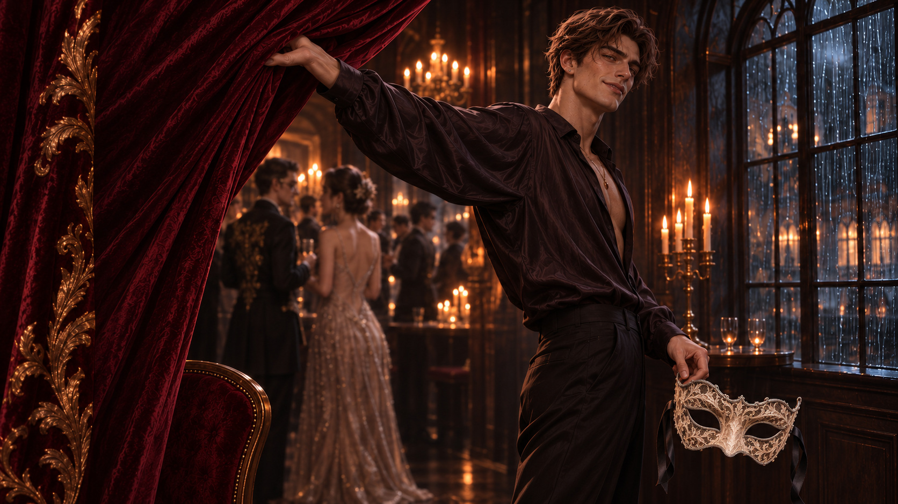

入站 KF01
入站 · 第一次对视
近景 / 第一人称
男主看向你，手扶帘边；不提前把整间会所全部展示。
镜头 镜头轻微呼吸式靠近，半掩帘留出一道邀请。
推进 · 回退 · 停留 · CTA ＋
- 前进
- 滚动或点 Step inside，进入拉帘动作。
- 回退
- 回到起点即停住，保留同一张入站首帧。
- 停留
- 允许停在目光接触上，标题与第一句引导可读。
- CTA
- Step inside
BEHIND THE CURTAIN / THE COMPLETE JOURNEY
从第一次对视，到最后一张空椅。角色先完成各自的邀请，镜头再接近属于现场的道具；用户用推进、回退与停留，决定自己要走多近。
本页展示最新独立首尾帧与共享近景。运动员柔和 CG、女王成年女性 CG 修订已采用；旧 v8 四格板不再作为当前画面。24 镜不等于 24 段已生成视频。

交互执行说明：镜头推进由用户控制，CTA 出现在邀请成立之后。
滚动、触控滑动或方向键控制镜头推进；先看清角色行动，再接近自然存在的道具。
可按同一轨道回退，复看人物动作、道具近景和上一世界，保持空间方向。
停手即停留，不限时、不自动替用户选剧情；人物邀请完成处保留阅读窗口。
入站先给 Step inside；各场邀请完成后出现该场 CTA 和原对白；结尾提供故事选项与六世界回访。
01 / THE PRIVATE CLUB
掀帘让路 → 让你靠近 → 将面具自然放回桌面
You love it when I get jealous, don’t you?Answer him ↗
入站 KF01
近景 / 第一人称
男主看向你，手扶帘边；不提前把整间会所全部展示。
镜头 镜头轻微呼吸式靠近，半掩帘留出一道邀请。
当前独立首帧 / KF02 对应
中景 / 原轴线推进
他抬臂拉帘、身体侧让；你进入，他不拉你的手。
镜头 沿男主让出的缝隙推进，帘子向侧面打开。
当前独立尾帧
中近景 / 桌边
男主俯身靠近桌边，将双眼蕾丝面具放好；手自然离开缎带。
镜头 保持人脸与桌面面具同时可读，先让邀请成立。
共享道具微距 / 转场
极近景 / 推进
角色留在背景，不伸手把面具递来。
镜头 向左侧眼孔推进，暗部与银边逐步占满视线。
02 / THE VAMPIRE’S BALL
斜卧望来 → 撑起身体 → 揭开身侧毯边
You know vampires don’t need sleep. Still want me in your bed?Stay a little longer ↗
当前独立首帧
前景近物 → 室内中景
面具靠着床边的书；他已自然斜卧，没有迎面递物。
镜头 从左前景面具拉开，床榻、窗和人物逐渐明确。
首帧支撑 / 中间动作待视频
中景 / 低机位
他从支头静候转为关注来者，腿与手保持松弛。
镜头 缓慢走近床榻，保留身侧空位与右上窗中圆月。
当前独立尾帧
中近景 / 邀请完成
他撑肘抬身，收让腿部，拉开毯边，给你留出位置。
镜头 身体先被看清，窗中的月亮保留在可追踪的位置。
共享珍珠白圆盘 / 转场
极近景 / 抬升推进
人物的邀请已结束；月亮来自原窗景。
镜头 抬镜追向圆月，圆形居中放大，接统一圆盘近景。
03 / THE ATHLETE HOUSE
左侧清出沙发位／中间放稳头盔／右侧在吧台放下饮品
Who do you wanna spend the night with?Choose your company ↗
最新柔和 CG 独立首帧
高处圆灯 → 空间中景
三人处于不同区域和高度；没有排队向镜头站姿展示。
镜头 从球灯轮廓拉开至视线高度，完整交代沙发与吧台。
最新 CG 首帧 / 中间动作待视频
群像中景 / 轻微前移
左侧脱下外套；中间蹲下系鞋；右侧在吧台放书，视线先后接上你。
镜头 保留左中右分区，不用同一幅度的同步摆动。
最新柔和 CG 独立尾帧
群像中近景 / 三个落点
左侧拍清空沙发位；中间放稳头盔并拿起外套；右侧在吧台放下饮品。
镜头 保持三个邀请同时可读，头盔仍在近前凳面上。
共享头盔镜片微距 / 转场
极近景 / 降低并推进
头盔有凳面支撑；人物的手已放开。
镜头 视线落向玄关凳上的镜片，细琥珀弧光成为稳定识别线。
04 / THE MIDNIGHT GARAGE
准备上车 → 骑坐转身 → 轻拍留给你的空后座
How wild do you wanna get tonight?Choose the night ↗
当前独立首帧
近物 → 车身中景
骑手站在车边准备上车，头盔挂着；圆镜固定在支架上。
镜头 从镜片拉开，看见车把、挂钩、骑手与雨幕。
尾帧支撑 / 上车过程待视频
中景 / 保持轴线
他完成跨坐，一只手扶把，车始终停着。
镜头 镜头不跳到车的另一侧，持续看见上车后的背部方向。
当前独立尾帧
中近景 / 肩后回望
骑手回头对视，手掌拍一下空后座，等待你决定。
镜头 面部、手掌和空后座一同入镜；固定圆镜清晰可见。
共享圆镜近景 / 转场
极近景 / 持续推进
镜子留在车把支架上，角色不举起镜子。
镜头 推向固定圆镜；中央林径与三点灯位先被辨认。
05 / THE ELVEN COURT
走在前面回望 → 摘冠置于地图 → 为单烛挡风
It’s just you and me. Say my name.Say her name ↗
最新成年女性 CG 独立首帧
林径中远景 / 第一人称跟随
她轻提裙摆往前一步，确认你跟了上来。
镜头 中央林径延续镜中构图；女王在右前方回头。
尾帧支撑 / 摘冠过程待视频
中景 / 向地图桌轻移
她摘下王冠，将唯一一顶冠放在地图上，身体转向你。
镜头 只有短步与轻微镜头靠近，地图桌不凭空出现。
最新成年女性 CG 独立尾帧
中近景 / 表情与烛火并置
一手留在地图边，一手护火；她抬眼等你叫出名字。
镜头 女王、地图王冠与单烛都可读，火焰未被手遮住。
共享单烛火焰微距 / 转场
极近景 / 前移
烛台始终放在地图桌上；她的护火动作先完成。
镜头 火焰尖端、焰心和竖直方向成为连续画面中心。
06 / THE ROOMMATES
一人拉出空椅／一人放好第三盘 → 等你回应
Her or me? Or do you want us both?Take your seat ↗
当前独立首帧
前景烛火 → 晚餐中景
红发室友伸手找椅背；黑发室友正把第三个盘子放下。
镜头 从左前景单烛拉开，空椅和两人的准备动作出现。
尾帧支撑 / 拉椅过程待视频
中景 / 轻微降低视线
红发室友握住椅背，把椅子拉开后停住。
镜头 空椅向左前方拉出，椅背与可坐的空座都清楚。
当前独立尾帧
桌边中近景 / 三个餐位
黑发室友放好第三盘，双手停在桌边；红发室友仍扶空椅。
镜头 前方第三份餐位位于视线下方，两人的表情在上方。
当前独立尾帧 / 结尾选择
停留镜头 / 不再制造转场
两人等你回答，动作自然收住。
镜头 镜头停在空座与两人之间，保留呼吸感而非继续无限放大。
道具自然属于剧情。先完成邀请，再推进到形状、明度和运动能对应的细节。
匹配依据同一只眼孔的杏仁轮廓、细银边、象牙蕾丝与暗部深度
衔接执行先推到会所面具的左眼孔；接共享微距后，用短匹配溶解接床边面具，再拉开场景。
下一场入镜拉开成吸血鬼床边桌上的完整面具，再显露身后的斜卧角色。
不要把面具举到镜头前；不要将双眼面具替换成金色单眼牌。
匹配依据圆形边界、珍珠白明度与由暗到亮的中心
衔接执行邀请结束后才抬升推向窗中圆月；在共享白色圆盘近景匹配圆心与大小，再短溶解成球灯。
下一场入镜从球灯外轮廓拉开，露出海边会客空间与三人各自的动作。
不要突然出现光门；不要在圆形尚未填满视线时硬切另一间房。
匹配依据黑色弧形镜片边界与一条弯曲琥珀反光
衔接执行镜头接近凳上的镜片；在黑色镜面与弧光特写中短匹配溶解，接车库头盔。
下一场入镜从同类镜片拉开，看见头盔已自然挂在车把旁，骑手正准备上车。
头盔始终有真实支撑点；人物不向镜头递头盔。
匹配依据镜中居中的湿石小径、拱形树冠与三点灯位（中间更高）
衔接执行拍完空后座后推向仍固定在支架上的圆镜；共享镜面近景中短匹配溶解，再接女王林径首帧。
下一场入镜越过圆镜边缘后，林径直接成为全画幅，女王在前方回望。
镜子不脱离支架、不忽然放大成手持道具；花园里不再出现一面凭空的镜子。
匹配依据细长火焰的尖端、暖黄白焰心与竖直运动方向
衔接执行摘冠与护火动作先完整结束；随后推近火焰，短匹配溶解到室友前景烛火，再拉开晚餐。
下一场入镜从火焰拉开，露出晚餐桌、空椅及准备第三份晚餐的两人。
不要让她把蜡烛拿到镜头前；室友画面只保留一根主烛。
视频节点的生成完成与可下载文件分开核对。
THE LAST FRAME IS AN INVITATION
结尾停在空椅与三份晚餐。用户可以在本场回答，也可以回访六个世界；没有倒计时，也不替用户决定下一章。